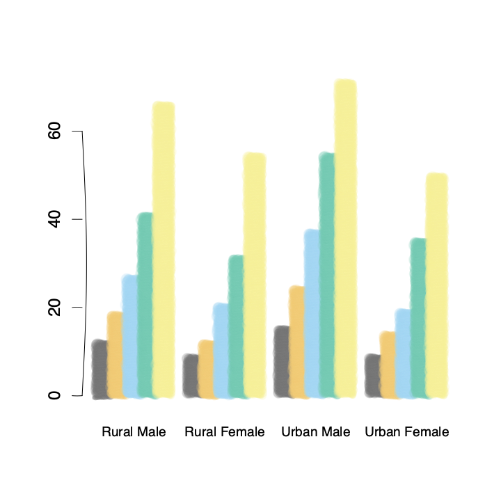

mypaintr is an R package that lets you plot graphics in a human-like, sketched way, using brushes from the libmypaint library and algorithms for “rough” lines and polygons.
Installation
You can install the development version of mypaintr from GitHub with:
# install.packages("pak")
pak::pak("hughjonesd/mypaintr")Example
A base R barplot using a custom brush, plus a hand-drawn axis:
library(mypaintr)
set_brush("experimental/bubble")
barplot(VADeaths, axes = FALSE,
beside = TRUE, col = palette.colors(5), border = NA,
cex.names = 0.8)
set_brush(NULL)
set_hand(hand())
axis(side = 2, at = seq(0, 60, 20))